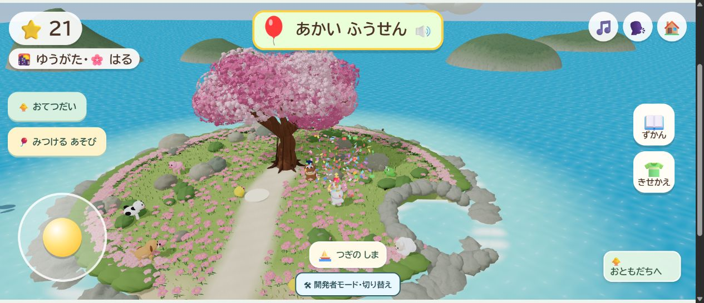
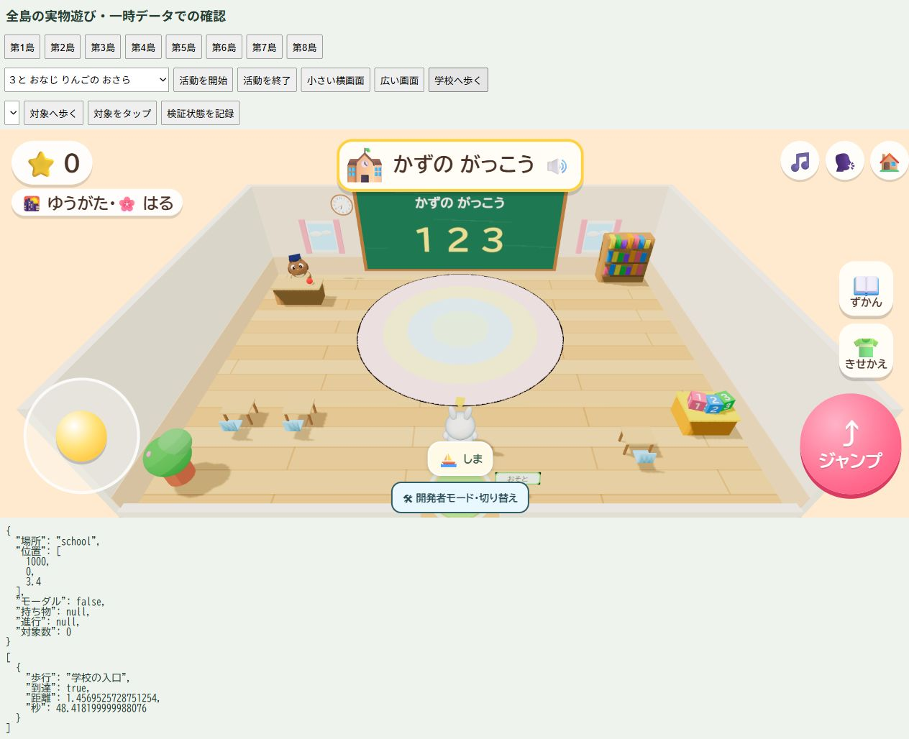
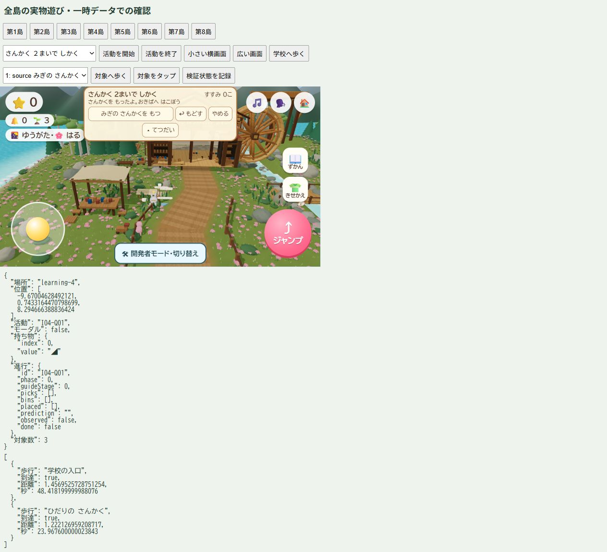
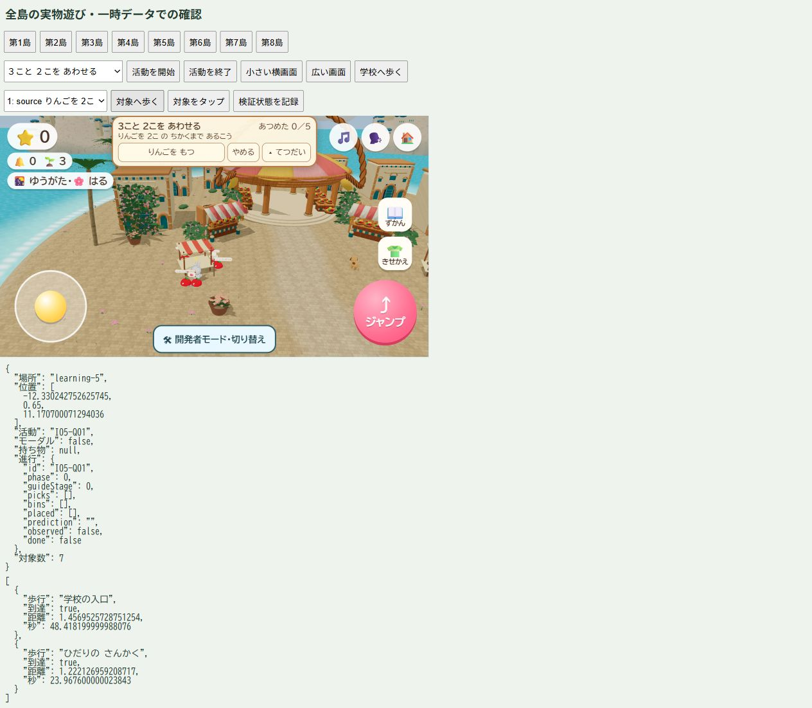
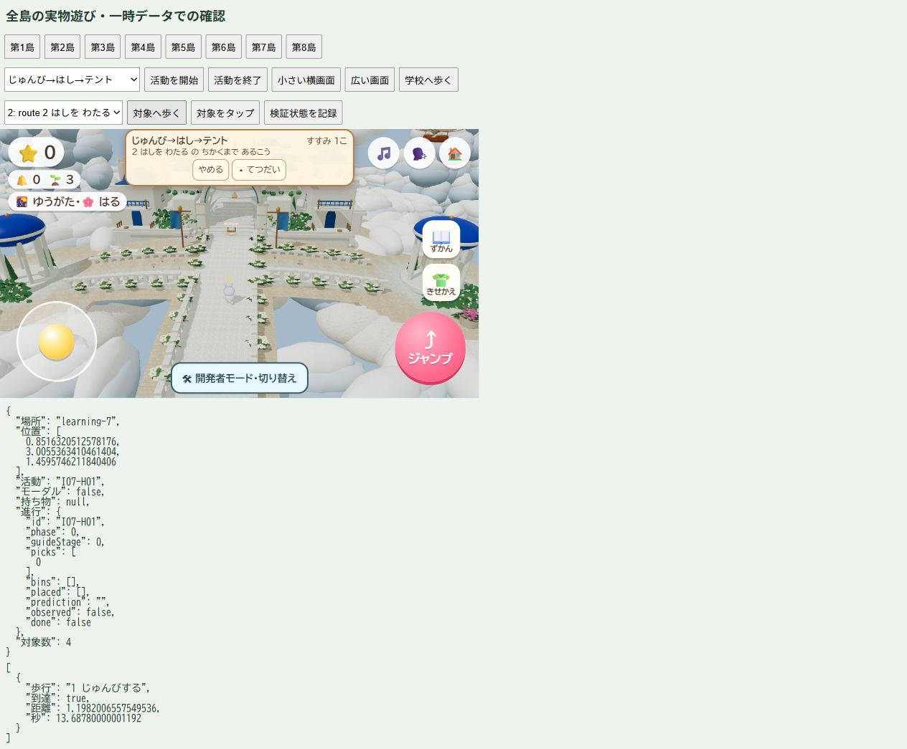
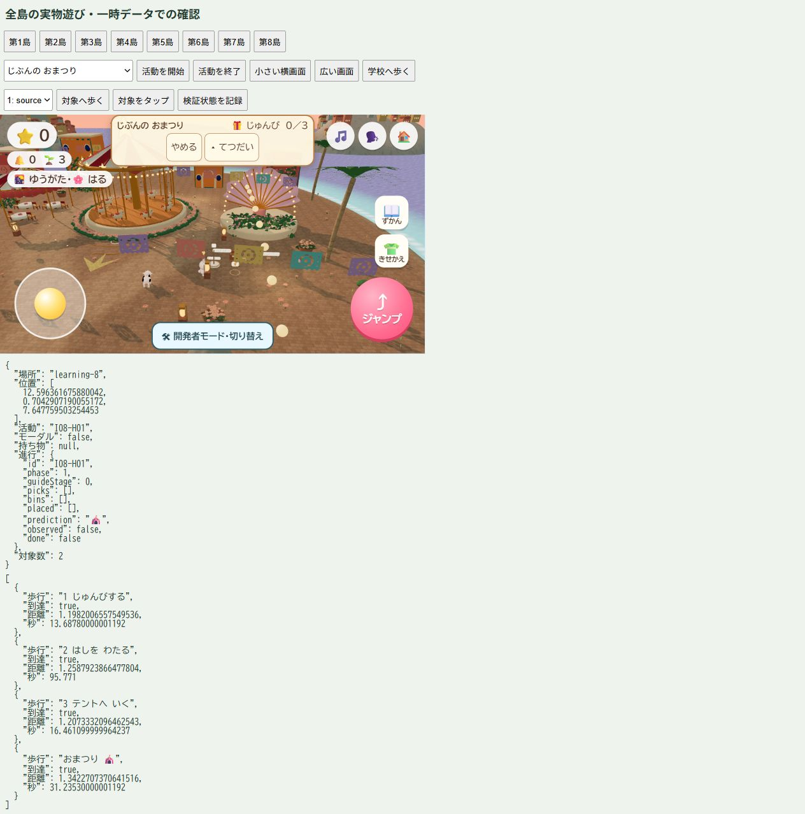
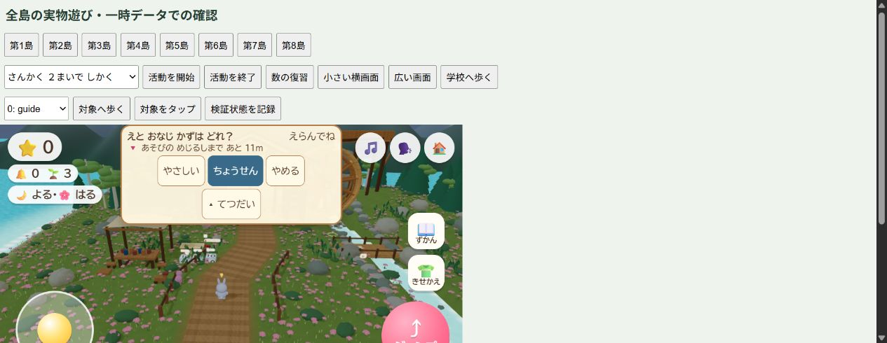
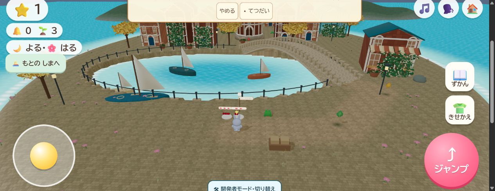

2026-10-18のローカル実画面。開発者用の一時データを使用。本人・子どもの体験評価は未取得。画像だけで全活動の合格とは扱わない。
住民のおさそいから開始し、移動補助で風船を見つけた。星が20から21へ増えた。

小道を歩き、入口から既存の教室へ入った。

スティックとジャンプを維持し、課題表示を上中央へ。庭の三角形を持って歩ける。

表示位置の確認画像。個数表示と台の実寸は、この画像の後に修正しているため最終の数表示の証拠には使わない。

荷物の準備を済ませ、中央橋を渡って次の地点へ向かう。小さい模型を選ぶだけの課題から島の探検へ変更。

道具のところまで歩いて選び、贈り物を準備する段階へ進む。操作ボタンは44px以上。

667×375の実画面で「ちょうせん」を選び、11・12・10の実物の選択肢へ切り替わった。元のスティック・ジャンプ・メニューを維持。

実物遊び中は別のおつかい入口が隠れる。
